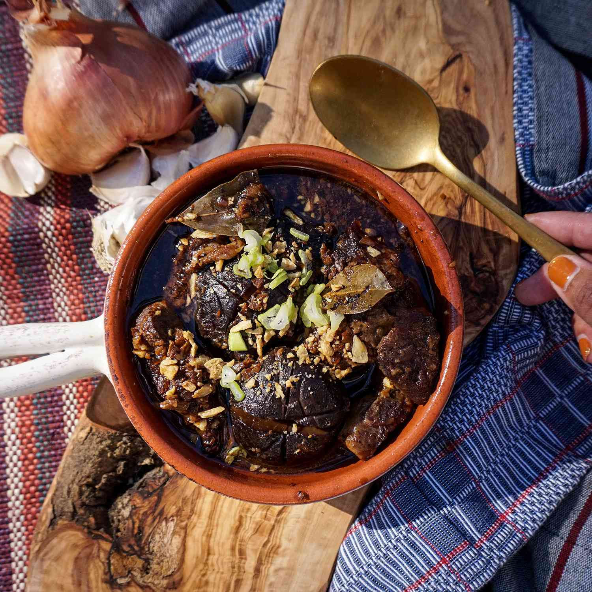

Pork Adobo is a popular dish that is treasured in Filipino cuisine and throughout the world. It's known for its savory, tangy, and totally unique blend of flavors. Despite its popularity, many people are still unfamiliar with adobo and what it really is. Let's take a closer look at adobo and explore its origins, ingredients, and some tips for making it at home.
Pork Adobo is a dish that is usually marinated in vinegar, soy sauce, garlic, and other spices. The meat is slowly cooked until it becomes tender and flavorful. Adobo is often served with rice and is a staple dish in many Filipino households. It can refer to a sauce, seasoning, or general style of cooking.